H1 Roots & leaves — beetroot
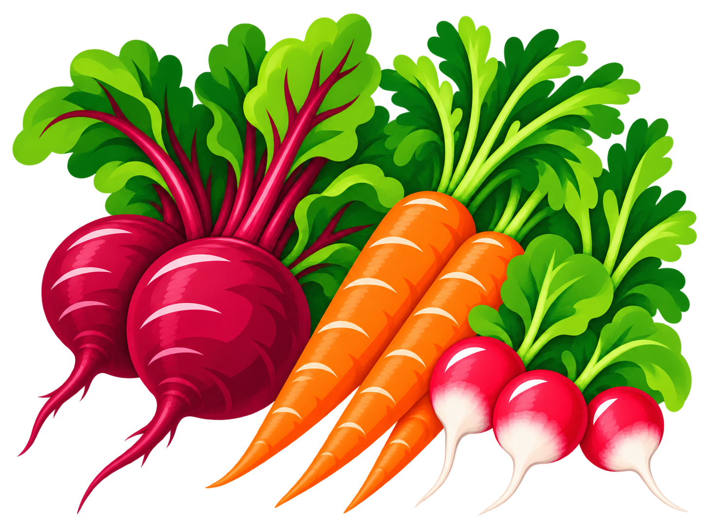
Header pair A · Save PNG
The same subjects and arrangements, now using the approved vegetable heroes as direct style references: broader colour planes, simpler foliage and graphic highlight strokes. Three header pairs and two portrait options.
New artwork for review. Each asset is a separate transparent PNG. Click an image to view it full size.

Header pair A · Save PNG
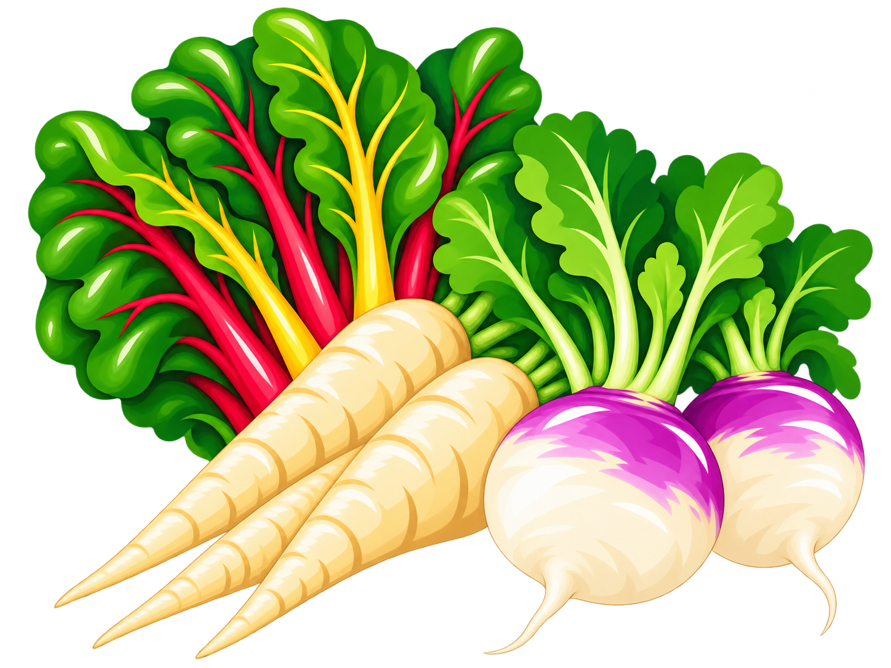
Header pair A · Save PNG
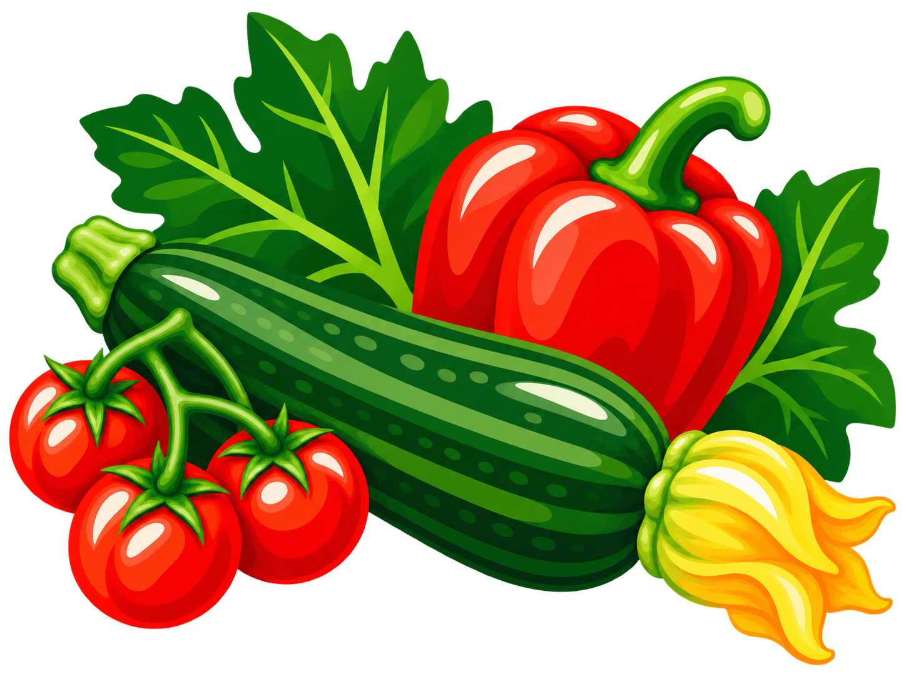
Header pair B · Save PNG
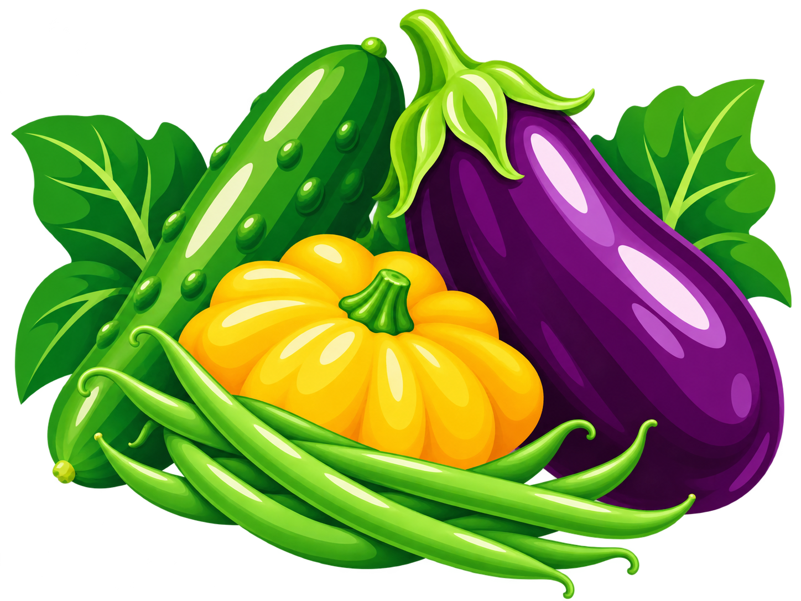
Header pair B · Save PNG
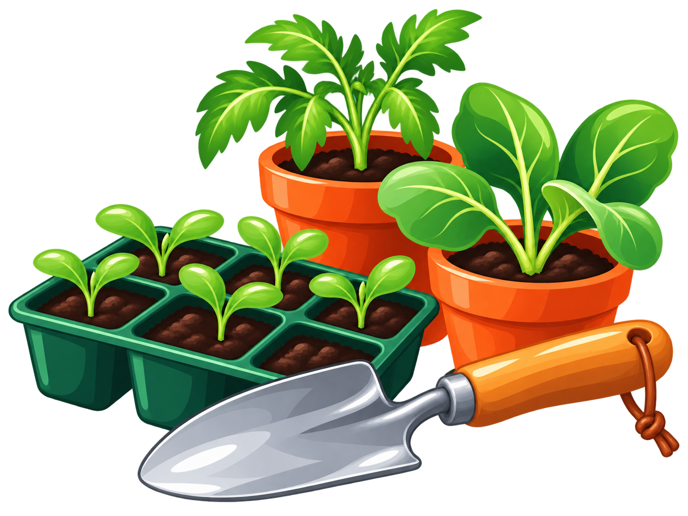
Header pair C · Save PNG
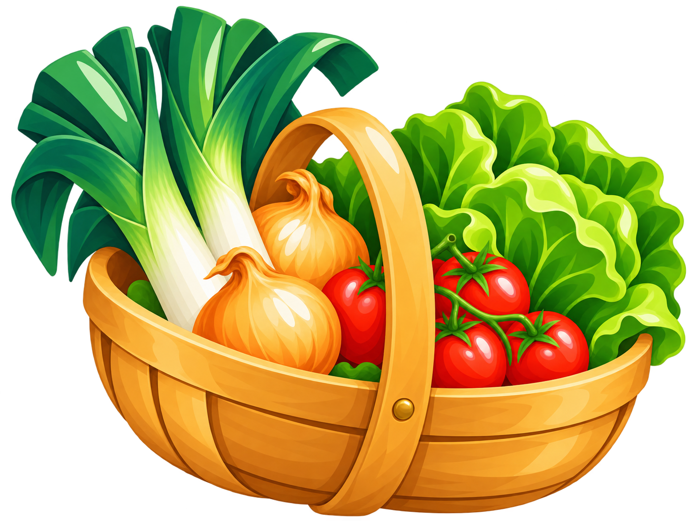
Header pair C · Save PNG
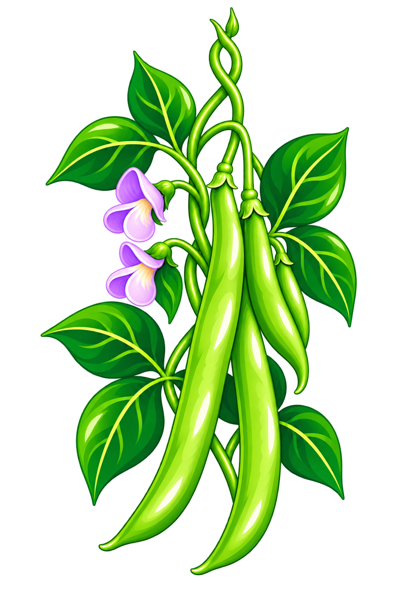
Portrait illustration · Save PNG
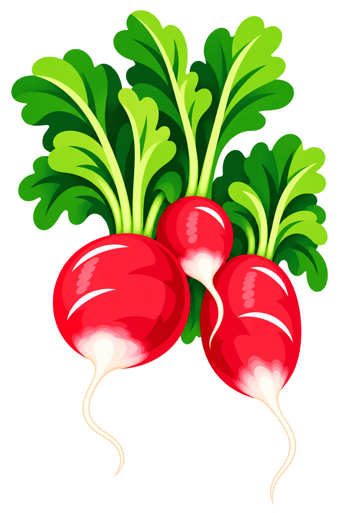
Portrait illustration · Save PNG
These two examples show the style references, the earlier detailed version and the redraw. Compare all eight illustrations.
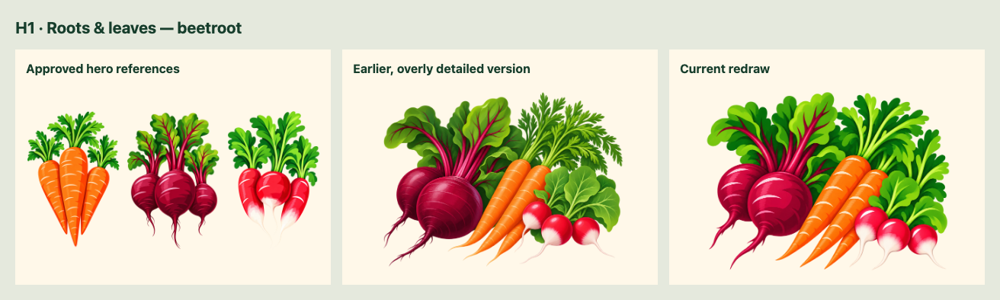
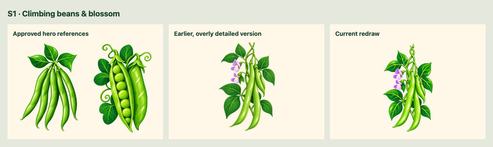
Roots and leaves across the contents; starting plants and gathering the harvest across the how-to. These are separate placement studies using the existing page headings.
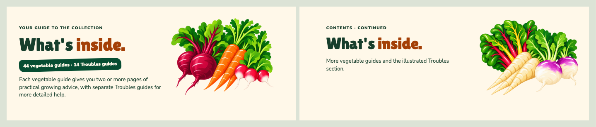
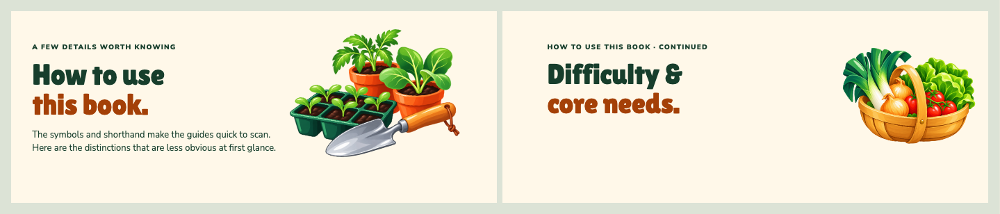
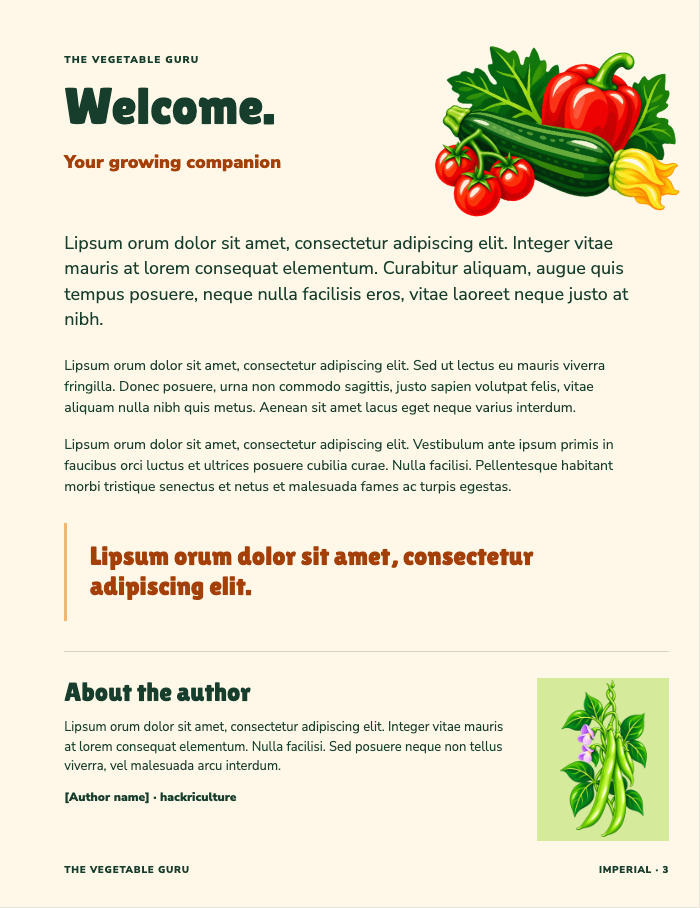
The small portrait image stays beside the author introduction. S1 gives it a new legume drawing with flowers; S2 is a brighter alternative.
This proposed allocation gives each opening-page header a different image:
H4 and S2 remain available as alternatives or for later pages.
Placement studies are screen previews, not new print proofs. Approved page files and existing PDFs remain unchanged.
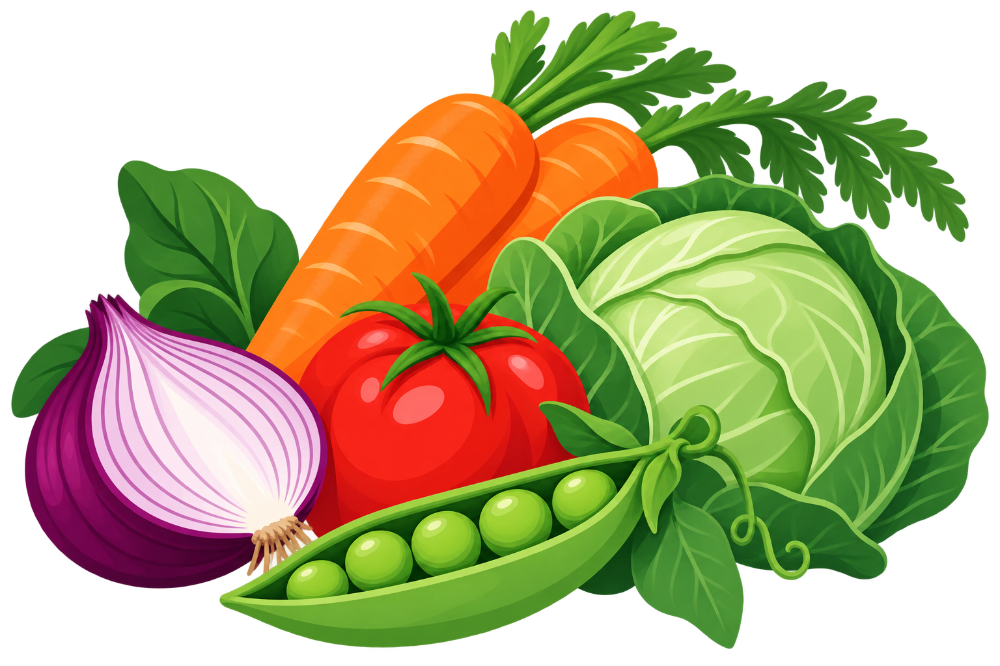
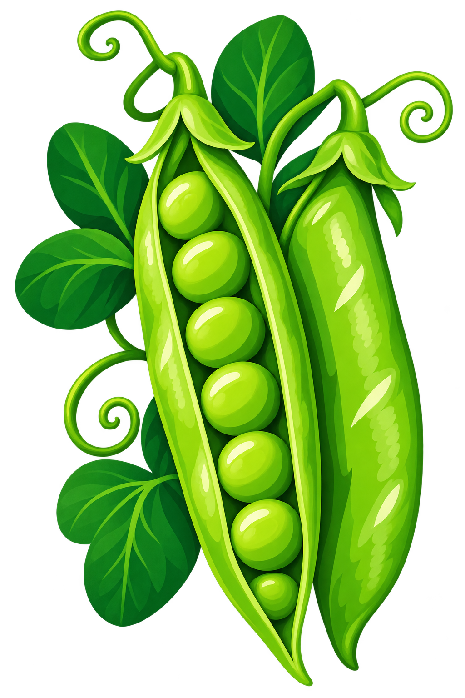
Redrawn with the built-in image-generation tool using the approved crop heroes as the primary style references. The original harvest and pea images above are retained source context. Exact prompts, output hashes, previous versions and framing revisions are in ARTWORK.json. Stock notes · Current handover